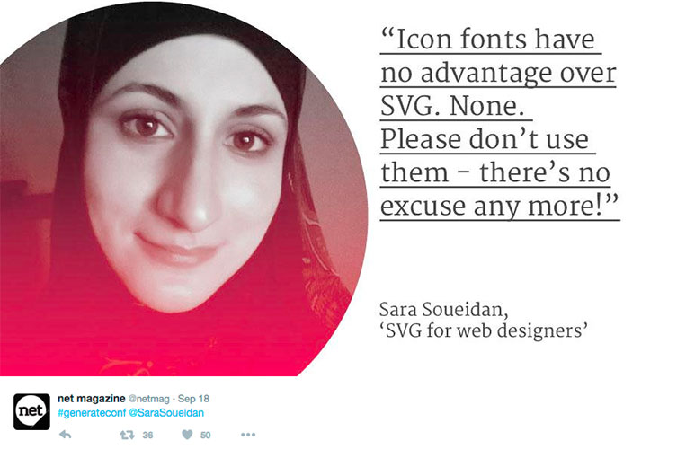
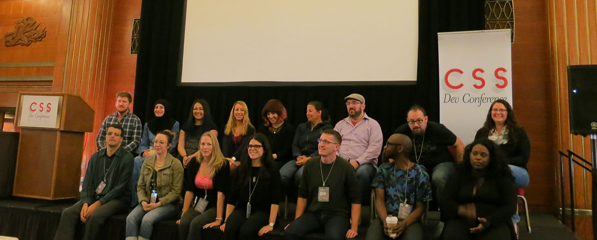
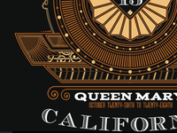
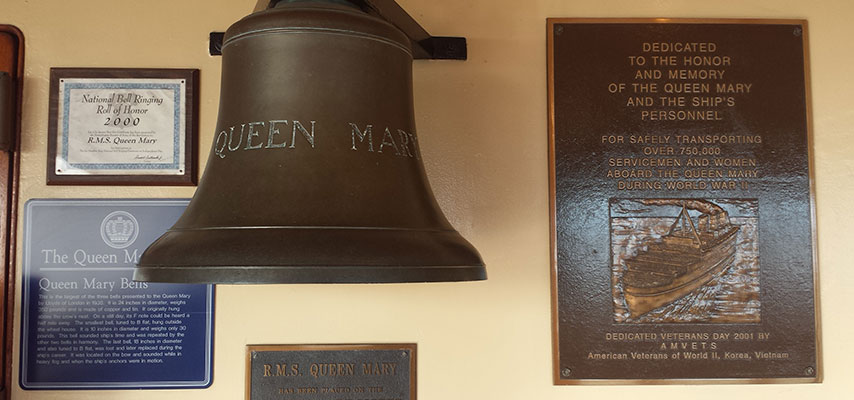
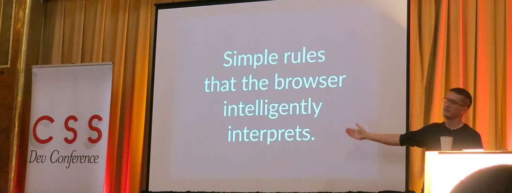
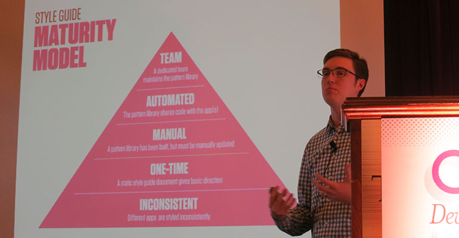
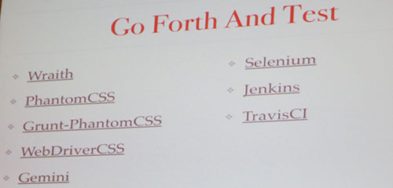
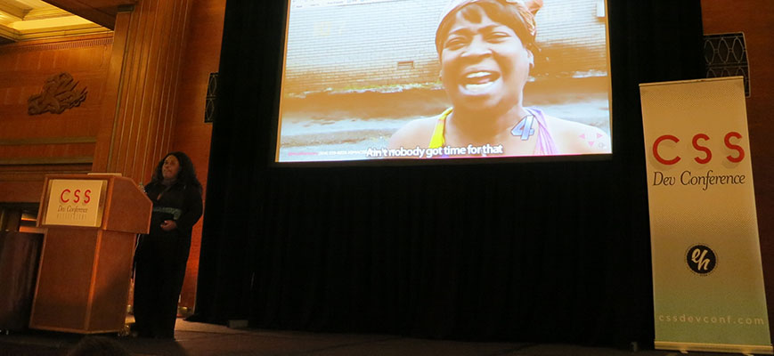
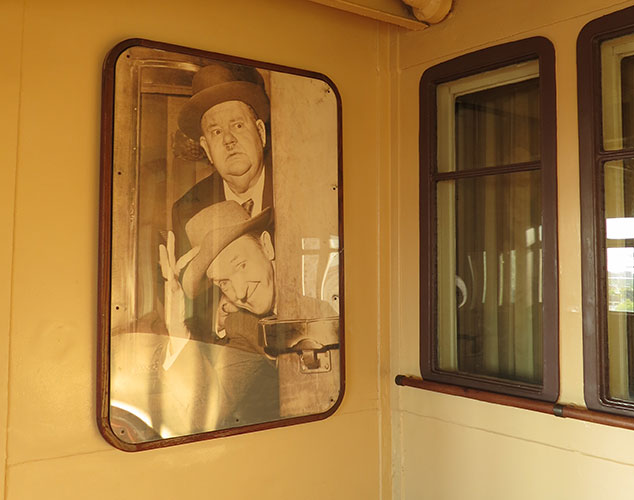

Long Beach, CA
October 25th - 28th
Queen Mary Boat
Light green means I attended the talk.
Monday, October 26th
Tuesday, October 27th

50% women

Reminder that front end devs should not code in a bubble.

Reassurance that we are quite up to date with CSS news and technology
Queen Mary Boat is legendary





